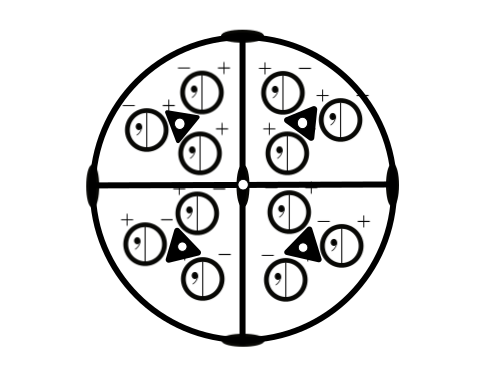

In the m-3 point group again the extra symmetry operations are produced by the point of inversion. There are three mirror planes created perpendicular to each two fold and as before objects are represented directly below other objects. The point of inversion is also indicated on the symbols for the three folds.
